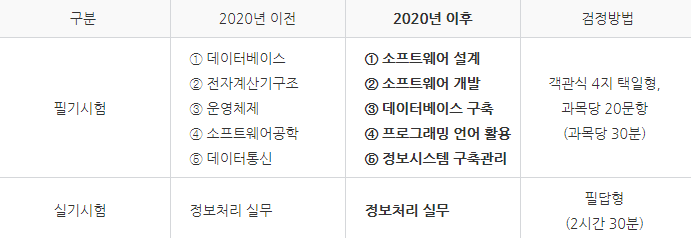

- 위와 같이 응시 자격은 관련 학과 학사 학위(또는 취득 예정자), 또는 현업에서 일정 기간 이상의 종사자를 요구한다. 하지만 시간이 바뀌어 개정되고 비전공자들도 응시 가능해졌다. 즉 4년제 대학 졸업자면 모두 응시가 가능한것이다.

- 위의 사진은 시험과목 및 검정방법이다. 합격기준은 필기 100점만점으로 하여 과목당 40점 이상, 전 과목 평균 60점 이상 실기 100점 만점으로 하여 60점 이상이다.
- 또한 필기시험에 합격한 자에 대하여는 필기시험 합격자 발표일로부터 2년간 필기시험을 면제한다.
정보처리기사의 활용도에 대하여
- 공무원 공채 시험에서 무조건 가산점 1%을 얻을 수 있다.
- 대학교 IT 계열 학과 중에서는 정보처리기사를 따면 졸업 논문을 갈음하는 것으로 인정해주는 곳도 있다.
- 기업체 전산실, 소프트웨어 개발업체, SI(system integrated)업체, 정부기관, 언론기관, 교육 및 연구기관, 금융기관, 보험사, 병원 등 컴퓨터 시스템을 개발 및 운용하거나, 데이터 통신을 이용하여 정보처리를 시행하는 업체에 취업할 수 있다.